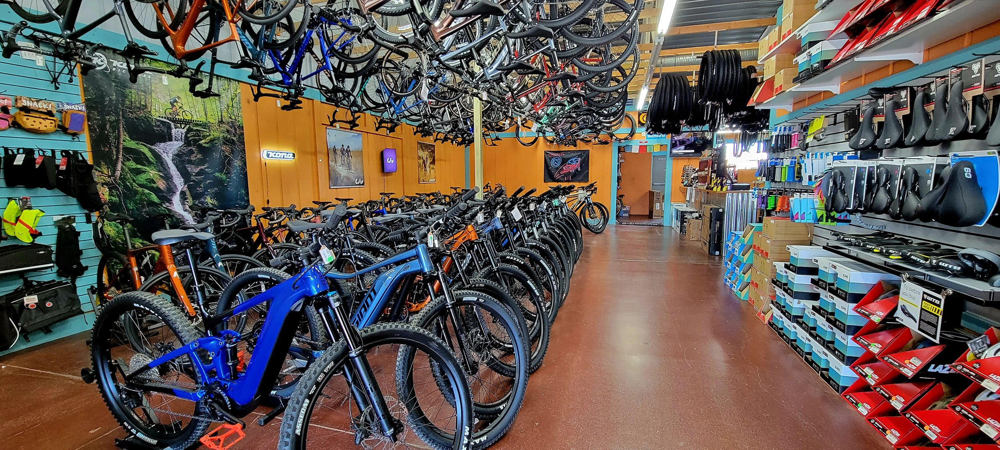

Welcome to my portfolio! I am a dedicated data analyst with a passion for uncovering insights and solving complex problems through data.
My journey into the world of data started with a curiosity that has only grown over time.
Beyond my work in data analysis, I am constantly seeking to expand my knowledge and skills in the broader field of data science.
In my projects, I make use of Excel, Power BI, SQL, and Python to turn data into insights.
My goal is to leverage data to drive informed decision-making and create meaningful impact. Explore my projects to see how I bring data to life.

In this project I analyzed a dataset about bicycles sales using Excel. Then I procedeed with data cleaning and the generation of pivot tables for a final dashboard.

Exploring this dataset I cover various analytical aspects, like infection rates, death percentages, and vaccination progress across different countries and continents using common SQL techniques such as joins, aggregate functions, and window functions to derive meaningful insights from the COVID-19 data.

In this project I proceed to clean and transform data, including standardizing date formats, fill missing data, breaking down addresses into different columns, and modifying categorical values for better readability and analysis.
This Python code implements a simple 'rock, paper, scissors' game with a clear and modular structure, using functions, conditionals, and loops to handle the game logic and user interaction.
In this Jupyter Notebook I perform an analysis of a movie dataset using Pandas for data manipulation, NumPy for mathematical operations, and Matplotlib and Seaborn for data visualization to find a high correlation between a movie's budget and its gross earnings, as well as between the number of votes and gross earnings.
Performed data importation, cleaning, and transformation using Power Query. Conducted analysis and reporting on an automobile dataset, uncovering key insights into how age, body style, and horsepower (HP) influence vehicle price and popularity.